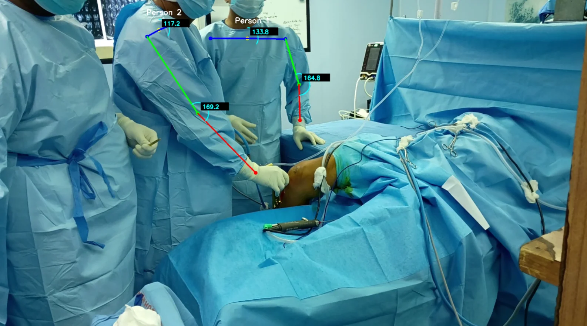
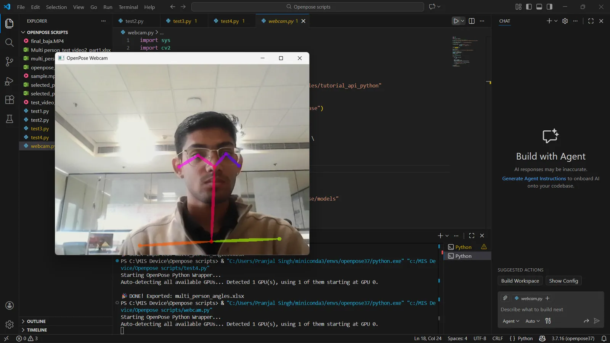
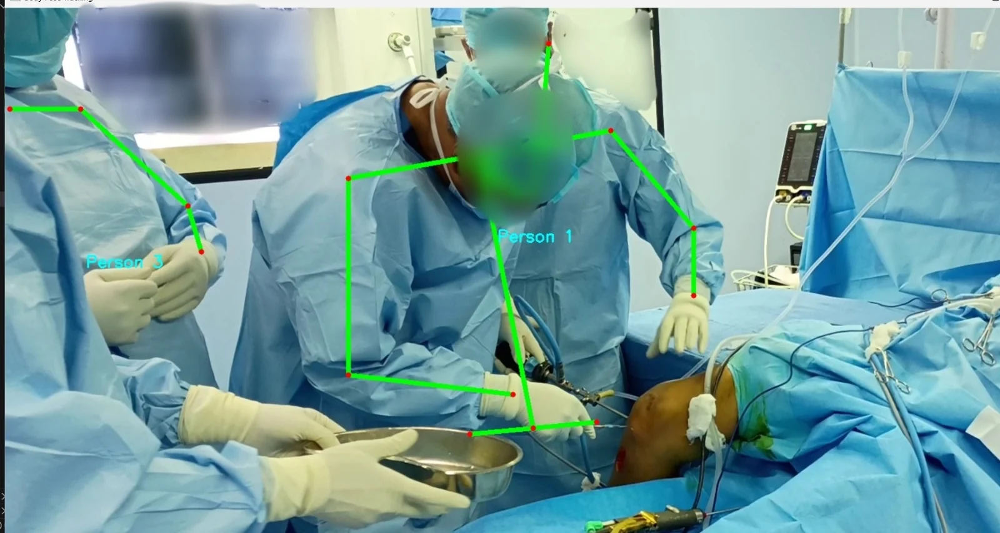
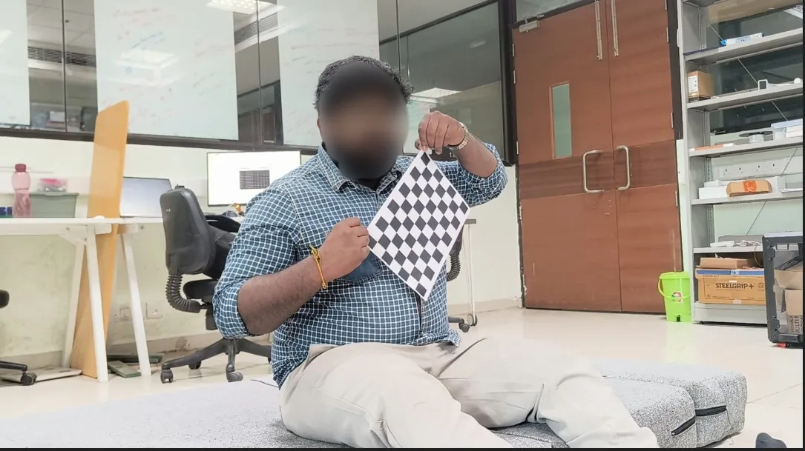
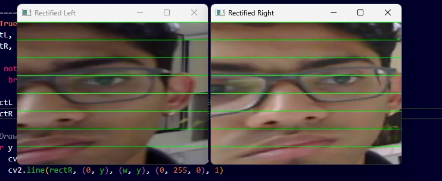
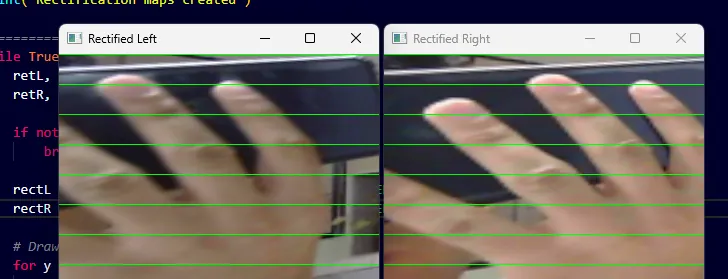
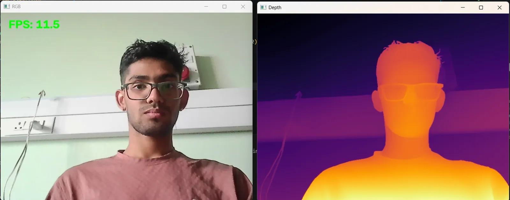

Markerless Surgeon Motion Capture
Markerless motion capture for minimally invasive surgery: a 7 cm stereo webcam pair, pose estimation that carries joint angles through occlusions, and monocular depth.
- With
- Dr. Jay Dhariwal (supervisor); Bavath D. (mentor)
- My part
- Camera calibration, pose tracking, joint angles, triangulation, depth mapping
- Tools
- Python, OpenCV, OpenPose, AlphaPose, Depth Anything; two webcams, 7 cm apart
- In numbers
- Triangulated distances 95-96% accurate against measured references; depth maps at about 11 frames a second
- Status
- Complete
This page is a piano roll. Its keys run down the left edge: click one, or click the paper to punch a note. Scrolling plays it.

The question
I wanted to measure how surgeons move during minimally invasive surgery, without body markers, as groundwork for studying ergonomics and fatigue. Motion capture usually needs a dedicated room or markers on the body, and neither works in an operating theatre. How far could cheap cameras and open-source models go instead?
Pose and joint angles
I started with 2D pose estimation, first OpenPose and then AlphaPose, to find the joints of each person in the frame, and calculated joint angles from the keypoints. In theatre, limbs keep disappearing behind other people and instruments. When that happens the code extrapolates the limb lines to carry the angle through the occlusion.

Before using real footage I tested it on myself, standing in the lab and mimicking surgical actions. Then I ran the tracker on recordings of real procedures, with faces covered.

Calibration and triangulation
For depth I paired two webcams 7 cm apart and calibrated them with a checkerboard: each camera’s intrinsics and lens distortion, then the pair’s position relative to each other. After rectification, the same point sits on the same row in both images, so its depth follows from how far it shifts between them. Triangulated distances came out in metres, 95-96% accurate against reference distances measured with standard instruments. I didn’t record the range of distances that figure covers, so read it as a bench check on the rig. It applies to distance only, so it says nothing about the joint angles.



Depth maps
Alongside the stereo pair I used Depth Anything for dense depth maps from a single camera, in real time at about 11 frames a second. To test depth on one object, I tracked a red pen cap and estimated its distance as it moved.

Also at QuEST Lab
- A literature review on contactless, gamified ways to assess physical and cognitive fatigue in clinicians, and on optical depth sensing.
- In a team of four, a pump and lining system for saline pressure and fluid management in arthroscopic surgery.
What it led to
At mPragati the robot arm I’m building has a related problem: its servos can’t report where they are. The same underlying technique carries over to estimating its joint angles from a camera, but it was built for people, so it has to be modified for the arm.